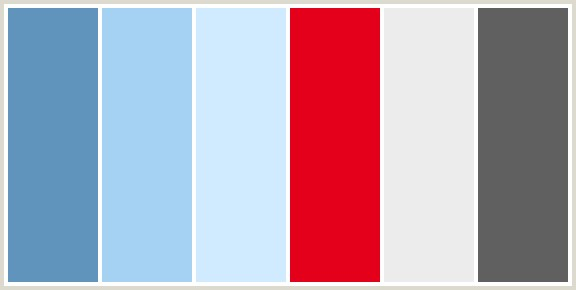

1st Delivery
- Proposal of the project application area
- Researching the "State-of-the-art"
- Opportunities for innovation
- User's profile:
- Concept design of the interactive system:
- Interaction Design:
1. Proposal of the project application area
“This proposal should set the knowledge domain, set of skills, abilities or skills on which you intend to focus your project, considering the proposal, that you will create, provide a tool to help or encourage the user's learning of a set of knowledge or skills that you select. You have to justify why you choose this application area, what you consider the potential impact of your project and what problems you intend to solve with it.”
- Our web page will display the content of every course that ISC students take to get their degree. This will let them select a specific topic that they want to know more information about, and display the videos, links or the discussion board where they can post questions to other students.
- We chose to do this because many topics from the career are kind of difficult to fully understand without any type of web page like Stack Overflow where you can discuss the topic or a specific problem, and Stack Overflow most of the times gives a more generalized answer and not what you are actually looking for, so this will help students get helpful and more focused information.
- User group: Students from the ISC Career (ITESM QRO )
Project Impact
- It will be an academic tool
- It will help students understand topics learnt in classes
- It can be used as review guide
- It will provide extra resources to go deeper into any topic that they want/need to know more about.
2. Researching the "State-of-the-art"
The report about the "State-of-the-art" has to describe what already exists, either in the private sector or in the academic research about the learning area on which your project will focus: what products or services exist that give support for this learning, what results they have had, what are their strengths and weaknesses, what learning experiences or learning disabilities have been documented in the area, which groups of people relate these experiences. This report must have at least six bibliographic references, which could be from books or digital source, document both the situation in the private sector and academic research.
- StackOverFlow: In a general way regarding solutions to problems with coding, StackOverFlow is a web page which works as a discussion board. Here, users
ask questions about specific issues in their own codes. A disadvantage with this webpage is that the answers won’t help with more general doubts or theoretical ones,
but more regarding logical errors inside an specific problem. Also the answers might not be completely reliable since anyone can give their own opinion and most of
them will give the solution instead of a clear explanation.
Go to the references - Plan de Estudios de Profesional:This is the official webpage created by the Instituto Tecnológico y de Estudios Superiores de Monterrey(ITESM). The page
provides information regarding the courses seen in the career of ISC. The courses can be organised by category or period(semester). When clicking the course key,
specific information such as credits, equivalences and suggested bibliography are displayed.
Go to the references - Plan de Estudio ISC2011:Created by students of ISC from the campus, it displays what the Plan de Estudios Profesional does but in an easier and more interactive
presentation. It lacks some important information such as suggested bibliography and its main focus is to help the users to decide the order for taking the courses, more than
the content of the courses themselves.
Go to the references - Khan Academy: This webpage has more specific information about many different topics and is divided by subjects. One of the things that makes it stand out is the use
of videos with examples for explanations and also its simplicity and self-paced style. What we are trying to pursue is also this kind of auto learning but including the categories
divided by specific needs of our users.
Go to the references
3. Opportunities for innovation
Innovation opportunities arising from the investigation of the "State-of-the-art" and looking for the weaknesses or failure of existing solutions that you can solve with your design proposal. Alternatively, could be presented the evidence that there is no solution as you intend to propose or making evident in what ways your proposal makes the difference on existing solutions.
You should be an enrolled student at Tec de Monterrey to have access to the content of the courses that are given in the campus, and we haven’t come across any page that does anything similar.
If we got official support from the teachers we could make this a hub for students to get legitimate and reliable information. One of the things we’ve heard teachers complain about is that when students try to search for information themselves they often find things that either aren’t accurate or they get confused because the teacher explained it differently, with this web page we could help mitigate those problems by giving them the information from a web site previously selected by the teacher.
Our web page could be a nice alternative to blackboard, or it could have some integration with it, maybe a link inside Blackboard that sends you to our page.
4. User's profile
The development of user profile is critical to the success of the product, therefore must be done thoroughly and with a good level of detail, considering all aspects seen in class "Context and User":

- Occupation: Student
Name: Johanatan Smith
General characteristics:- Young
- Responsible
- Persistent
- Hard worker
- School: ITESM
Age: 21 years
From: Michigan, USA
Major: ISC - Required skills:
Know how to access the internet
Has good communication skills to properly describe a problem
5. Concept design of the interactive system
This deliverable itself made up of several elements:
- Name of the interactive system: Student’s Corner
- Colour palette, textures, fonts and alignment type: Red, blue, grey, sans-serif, Align left , centered

6. Interaction Design
Plan the interaction design through design and definition of the following elements:
There will be a menu with different sections, which include :
First divided by area, then:
Assignments, Resources and the student’s blog discussion, where they will be allowed to discuss different type of topics or homeworks
The student will click on any course he is interested at, and he can write inside discussion section.